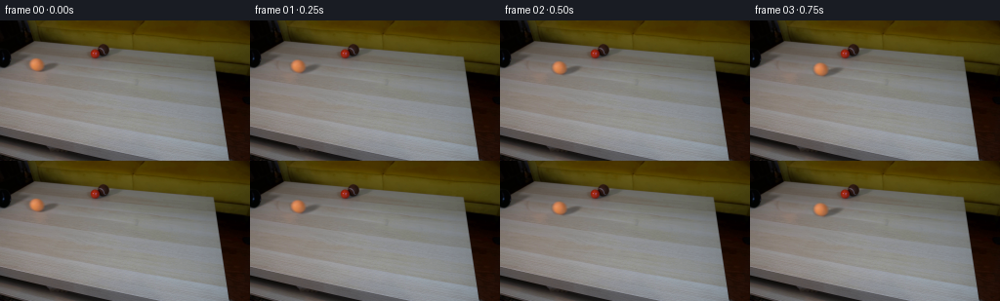
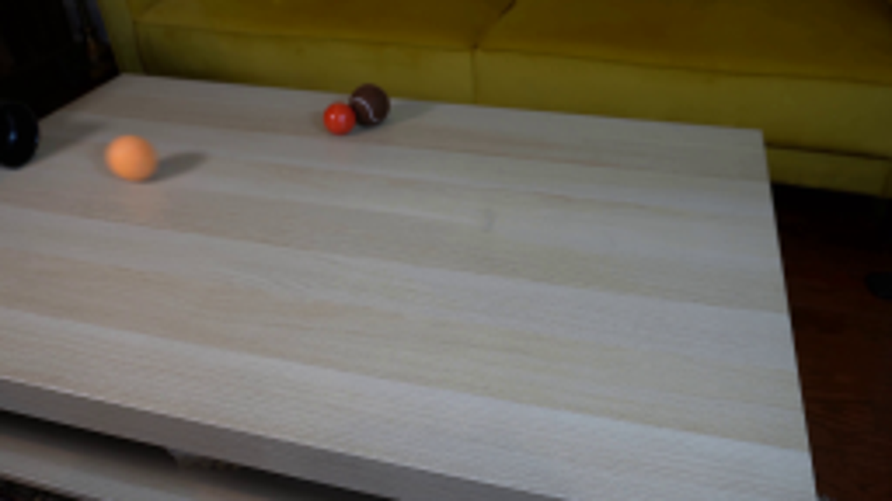
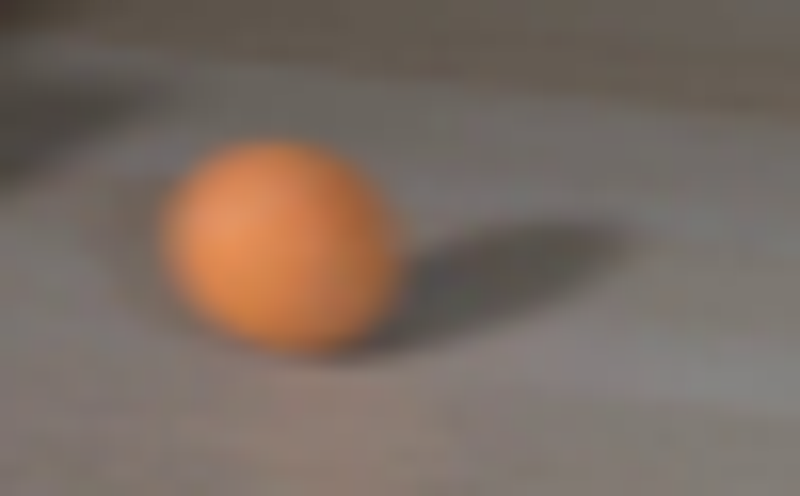
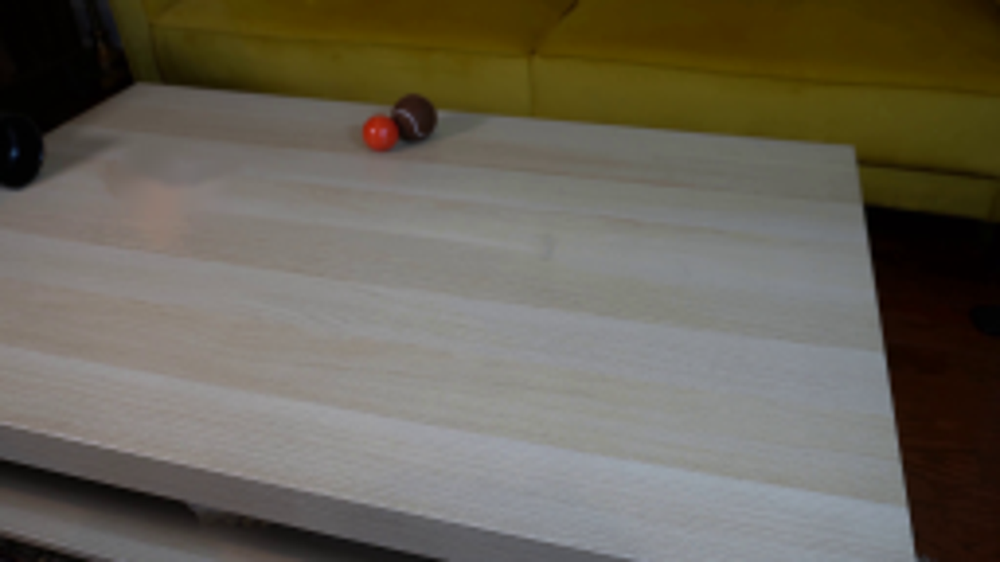
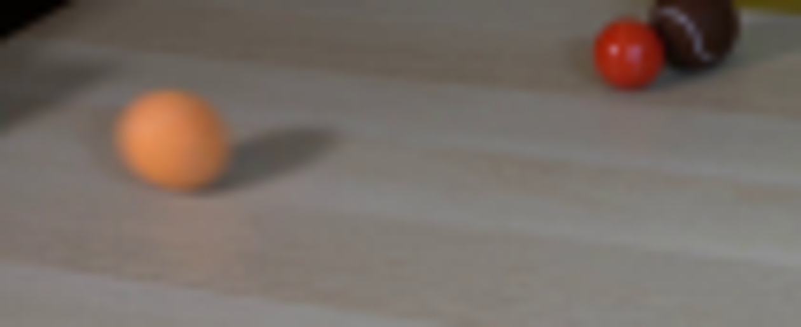
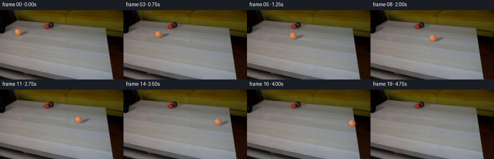

← 本轮 smoke 总览traex/GPT-6-Astra · 0012
vision-agent · 256×144 · 4.0 FPS · 20 帧 · 状态 complete · 输出 tokens 12795
原始任务Static locked-off single-shot with fixed frame throughout filmed with constant framerate in real-time. The scene shows a realistic scientific demonstration. The scene only contains the described setup and actions. A light-colored wooden coffee table with a few small objects on it, including a brown tennis ball and a smaller red ball. The orange tennis ball rolls straight out of the black pipe over the entire table towards the right side.
当前保存结果
已保存候选与代码修改
这里按时间展示外部捕获的候选，每份均可单独播放。保存新版本不等于完成视觉检查；下方工具证据记录实际看过的图。
候选 01 · 2026-11-09T00:20:41.259112+00:00 · 点开播放与检查图
inspection.png

transition_check.png

代码变化
--- 上一保存版本
+++ 本次保存版本
@@ -0,0 +1,133 @@
+"""Reconstruct a locked-camera tabletop shot using the supplied photograph.
+
+All imagery is derived from first_frame.png. Motion, a soft contact shadow,
+and the surface rotation are evaluated analytically, with no learned models.
+"""
+from pathlib import Path
+import math
+import cv2
+import numpy as np
+from PIL import Image
+from scipy.special import ndtr
+import artifact_io
+
+ROOT = Path(__file__).resolve().parent
+H, W = 144, 256
+Y, X = np.mgrid[:H, :W].astype(np.float64)
+
+
+def clean_plate(photo):
+ # Continue the same board's grain from its unobstructed section to the right.
+ u = (X - 48.2) * .953 - (Y - 47.4) * .302
+ v = (X - 48.2) * .302 + (Y - 47.4) * .953
+ ball = np.sqrt(((X - 37.4) / 8.5)**2 + ((Y - 45.2) / 8.5)**2)
+ shadow = np.sqrt((u / 14.2)**2 + (v / 5.)**2)
+ q = np.minimum(ball, shadow)
+ blend = np.clip((1.18 - q) / .27, 0., 1.)
+ sample = cv2.remap(photo.astype(np.float32),
+ (X + 40).astype(np.float32),
+ (Y + 4.4).astype(np.float32),
+ cv2.INTER_LINEAR, borderMode=cv2.BORDER_REFLECT).astype(float)
+ ring = (q > 1.09) & (q < 1.6) & (X > 23)
+ design = np.stack([np.ones_like(X), (X - 43)/20, (Y - 45)/10], -1)
+ difference = photo - sample
+ coef = np.linalg.lstsq(design[ring], difference[ring], rcond=None)[0]
+ for _ in range(3):
+ residual = difference[ring] - design[ring] @ coef
+ weight = 1 / (1 + (residual.mean(axis=1)/4)**2)
+ coef = np.linalg.lstsq(design[ring]*weight[:, None],
+ difference[ring]*weight[:, None], rcond=None)[0]
+ replacement = sample + design @ coef
+ return np.clip(photo*(1-blend[..., None]) + replacement*blend[..., None], 0, 255)
+
+
+# The silhouette and penumbra dimensions are measured from the photograph.
+CX, CY, RX, RY = 37.22845898, 45.04945520, 6.92834021, 6.35173297
+SHX, SHY = 47.77558113, 47.80866759
+
+def initial_shadow():
+ a = -.32279413
+ u = (X-SHX)*math.cos(a) + (Y-SHY)*math.sin(a)
+ v = -(X-SHX)*math.sin(a) + (Y-SHY)*math.cos(a)
+ q = (u/10.43248673)**2 + (v/2.81773677)**2
+ return .31396992*np.exp(-.5*q**2.64551687)
+
+
+def main():
+ photo_u8 = np.array(Image.open(ROOT/'first_frame.png').convert('RGB'))
+ photo = photo_u8.astype(np.float64)
+ plate = clean_plate(photo)
+ d = np.sqrt(((X-CX)/RX)**2 + ((Y-CY)/RY)**2)
+ matte = ndtr((1-d)*RX/1.20245476)
+ matte[matte < .001] = 0
+ shadow = initial_shadow()
+ old_backdrop = plate*(1-shadow[..., None])
+ color = (photo-old_backdrop*(1-matte[..., None]))/np.maximum(matte[..., None], .001)
+ color = np.clip(color, 0, 255)
+ premul = (color*matte[..., None]).astype(np.float32)
+ matte = matte.astype(np.float32)
+ shadow = shadow.astype(np.float32)
+
+ # Constant rolling resistance, with a straight trajectory aligned to the pipe.
+ speed, deceleration = 47., 1.0
+ edge_x = 223.2
+ edge_distance = edge_x-CX
+ edge_time = (speed-math.sqrt(speed*speed-2*deceleration*edge_distance))/deceleration
+ edge_speed = speed-deceleration*edge_time
+ edge_y = CY + .135*edge_distance
+
+ def render(t):
+ if t <= edge_time:
+ dist = speed*t-.5*deceleration*t*t
+ center_x, center_y = CX+dist, CY+.135*dist
+ fall = 0.
+ else:
+ elapsed = t-edge_time
+ dist = edge_distance+edge_speed*elapsed
+ center_x = CX+dist
+ # Once unsupported the sphere follows a ballistic arc off the edge.
+ fall = .5*650.*elapsed*elapsed
+ center_y = edge_y+.135*edge_speed*elapsed+fall
+ scale = 1+.00022*dist
+ mx = ((X-center_x)/scale+CX).astype(np.float32)
+ my = ((Y-center_y)/scale+CY).astype(np.float32)
+ a = np.clip(cv2.remap(matte, mx, my, cv2.INTER_CUBIC), 0., 1.)
+ rgb = np.clip(cv2.remap(premul, mx, my, cv2.INTER_CUBIC), 0., 255.)
+ rgb = np.minimum(rgb, a[..., None]*255.)
+
+ # Rotate very subtle surface mottling without rotating the illumination.
+ nx = (X-center_x)/(RX*scale)
+ ny = (Y-center_y)/(RY*scale)
+ nz = np.sqrt(np.maximum(0, 1-nx*nx-ny*ny))
+ angle = dist/RX
+ u = nx*math.cos(angle)+nz*math.sin(angle)
+ w = -nx*math.sin(angle)+nz*math.cos(angle)
+ fuzz = np.sin(11*u+3*ny)*np.sin(13*w-5*ny) + .5*np.sin(20*u-7*w+16*ny)
+ rgb *= (1 + .003*fuzz*np.clip((1-nx*nx-ny*ny)*3, 0, 1))[..., None]
+
+ # Shadow remains on the tabletop and is clipped at its right boundary.
+ smx = ((X-center_x)/scale+CX).astype(np.float32)
+ smy = ((Y-(center_y-fall))/scale+CY).astype(np.float32)
+ s = np.clip(cv2.remap(shadow, smx, smy, cv2.INTER_LINEAR), 0, 1)
+ boundary = 218.0 + (Y-37.)*(16./107.)
+ on_table = np.clip(boundary-X+.5, 0, 1)
+ if t > edge_time:
+ s *= math.exp(-fall/5.)
+ s *= on_table
+ background = plate*(1-s[..., None])
+ return background*(1-a[..., None])+rgb
+
+ frames = [photo_u8.copy()]
+ for index in range(1, 20):
+ t = index/4.
+ # Short, fixed camera exposure; temporal sampling avoids harsh raster jumps.
+ image = sum(render(t+dt) for dt in (-1/128, 0, 1/128))/3.
+ frames.append(np.uint8(np.rint(np.clip(image, 0, 255))))
+ frames = np.stack(frames)
+ assert np.array_equal(frames[0], photo_u8)
+ artifact_io.save(frames, ROOT)
+ Image.fromarray(np.uint8(np.rint(plate))).save(ROOT/'.tmp/clean_plate.png')
+
+
+if __name__ == '__main__':
+ main()
可观测工具行为
命令 1 · 2026-11-08T23:45:13.728314+00:00/bin/bash -lc "ls -la && cat prompt.txt && printf '\\n---RULES---\\n' && cat GENERATION_RULES.md"
exit 0 命令 2 · 2026-11-08T23:46:14.115837+00:00/bin/bash -lc "cat artifact_io.py && python - <<'PY'
from PIL import Image
im=Image.open('first_frame.png'); print(im.size); im.resize((1024,576)).save('.tmp/large.png')
PY"exit 0 命令 3 · 2026-11-08T23:46:38.660112+00:00/bin/bash -lc "python - <<'PY'
import importlib.util
for x in ['cv2','scipy','numpy','PIL']:
print(x, bool(importlib.util.find_spec(x)))
from PIL import Image
im=Image.open('first_frame.png'); im.crop((20,30,70,61)).resize((800,496)).save('.tmp/crop.png')
PY"exit 0 命令 4 · 2026-11-08T23:54:46.964365+00:00/bin/bash -lc "cat > .tmp/test_plate.py <<'PY'
import cv2
import numpy as np
from PIL import Image
im=np.array(Image.open('first_frame.png').convert('RGB'))
y,x=np.mgrid[:144,:256]
mask=(((x-37.4)/9.0)**2+((y-45.1)/8.7)**2<1)
# elongated shadow running away from light
u=(x-47.7)*.95-(y-47.5)*.31
v=(x-47.7)*.31+(y-47.5)*.95
mask|=(u/15)**2+(v/4.8)**2<1
m=mask.astype('uint8')*255
ns=cv2.inpaint(im,m,4,cv2.INPAINT_NS)
te=cv2.inpaint(im,m,4,cv2.INPAINT_TELEA)
Image.fromarray(ns).resize((1024,576)).save('.tmp/plate_ns.png')
Image.fromarray(te).resize((1024,576)).save('.tmp/plate_te.png')
Image.fromarray(im).save('.tmp/ref.png')
np.save('.tmp/mask.npy',m)
PY
python .tmp/test_plate.py"exit 0 命令 5 · 2026-11-08T23:56:52.914548+00:00/bin/bash -lc "python - <<'PY'
from PIL import Image
im=Image.open('first_frame.png'); im.crop((15,27,120,70)).resize((1260,516)).save('.tmp/table.png')
PY"exit 0 命令 6 · 2026-11-09T00:08:17.162812+00:00/bin/bash -lc "cat > .tmp/plate_trials.py <<'PY'
import cv2
import numpy as np
from PIL import Image
im=np.array(Image.open('first_frame.png').convert('RGB')).astype(float)
h,w=im.shape[:2];y,x=np.mgrid[:h,:w].astype(float)
u=(x-48.2)*.953-(y-47.4)*.302
v=(x-48.2)*.302+(y-47.4)*.953
q1=np.sqrt(((x-37.4)/8.5)**2+((y-45.2)/8.5)**2)
q2=np.sqrt((u/14.2)**2+(v/5.0)**2)
q=np.minimum(q1,q2)
a=np.clip((1.18-q)/.27,0,1)
for dx,dy in [(40,4.4),(48,5.3),(32,4.3),(0,17)]:
src=cv2.remap(im.astype(np.float32),(x+dx).astype(np.float32),(y+dy).astype(np.float32),cv2.INTER_LINEAR,borderMode=cv2.BORDER_REFLECT).astype(float)
ring=(q>1.09)&(q<1.6)&(x>23)
A=np.stack([np.ones_like(x),(x-43)/20,(y-45)/10],-1)
diff=im-src
coeff=np.linalg.lstsq(A[ring],diff[ring],rcond=None)[0]
# soft least square outlier suppression
for i in range(3):
r=diff[ring]-A[ring]@coeff
wt=1/(1+(r.mean(axis=1)/4)**2)
coeff=np.linalg.lstsq(A[ring]*wt[:,None],diff[ring]*wt[:,None],rcond=None)[0]
corrected=src+A@coeff
plate=im*(1-a[:,:,None])+corrected*a[:,:,None]
Image.fromarray(np.uint8(np.clip(plate,0,255))).resize((1024,576)).save(f'.tmp/plate_{dx}.png')
np.save(f'.tmp/plate_{dx}.npy',plate)
PY
python .tmp/plate_trials.py"exit 0 命令 7 · 2026-11-09T00:18:09.813635+00:00/bin/bash -lc "python - <<'PY'
import numpy as np
from PIL import Image
im=np.array(Image.open('first_frame.png')).astype(float)
np.set_printoptions(precision=0, suppress=True,linewidth=180)
print('R-G'); print((im[36:56,27:48,0]-im[36:56,27:48,1]))
PY"exit 0 命令 8 · 2026-11-09T00:18:47.060702+00:00/bin/bash -lc "cat > .tmp/fit.py <<'PY'
import numpy as np, cv2
from PIL import Image
from scipy.optimize import least_squares
im=np.array(Image.open('first_frame.png')).astype(float)
y,x=np.mgrid[:144,:256].astype(float)
# fit ball silhouette using red-green chroma, intrinsic linear light gradient
obs=(im[:,:,0]-im[:,:,1])
sel=(x>25)&(x<50)&(y>34)&(y<57)
def calc(p):
cx,cy,rx,ry,sig,c0,gx,gy=p
d=np.sqrt(((x-cx)/rx)**2+((y-cy)/ry)**2)
from scipy.special import ndtr
a=ndtr((1-d)*rx/sig)
col=c0+gx*(x-cx)/rx+gy*(y-cy)/ry
return a*col+(1-a)*7,a
p=least_squares(lambda p:(calc(p)[0]-obs)[sel],[37.25,45.5,6.8,6.5,.65,77,-10,2],bounds=([36,44,6,6,.3,65,-30,-20],[39,47,8,8,1.5,100,20,20])).x
print('ball',p)
a=calc(p)[1]
plate=np.load('.tmp/plate_40.npy')
ratio=np.clip(1-im.mean(2)/plate.mean(2),0,1)
sel=(x>27)&(x<65)&(y>37)&(y<57)&(a<.03)
def sh(p):
cx,cy,sx,sy,ang,opacity,exp=p
u=(x-cx)*np.cos(ang)+(y-cy)*np.sin(ang)
v=-(x-cx)*np.sin(ang)+(y-cy)*np.cos(ang)
rr=(u/sx)**2+(v/sy)**2
return opacity*np.exp(-.5*rr**exp)
p2=least_squares(lambda p:(sh(p)-ratio)[sel],[45,48,7,2.2,-.35,.4,1],bounds=([40,45,4,1,-.8,.15,.5],[52,51,12,4,0,.7,3])).x
print('shadow',p2)
np.savez('.tmp/fit_params.npz',ball=p,shadow=p2)
# reconstruct subject over unmodified background to assess matte.
s=sh(p2)
bg=plate*(1-s[:,:,None])
fg=(im-bg*(1-a[:,:,None]))/np.maximum(a[:,:,None],.001)
fg=np.clip(fg,0,255)
# move 45px across image
cx,cy=p[:2]; dx=45;dy=dx*.135
xm=(x-dx).astype(np.float32); ym=(y-dy).astype(np.float32)
ma=cv2.remap(a.astype(np.float32),xm,ym,cv2.INTER_LINEAR)
ms=cv2.remap(s.astype(np.float32),xm,ym,cv2.INTER_LINEAR)
premult=cv2.remap((fg*a[:,:,None]).astype(np.float32),xm,ym,cv2.INTER_LINEAR)
out=plate*(1-ms[:,:,None])*(1-ma[:,:,None])+premult
Image.fromarray(np.uint8(np.clip(out,0,255))).resize((1024,576)).save('.tmp/moved.png')
PY
python .tmp/fit.py"exit 0 命令 9 · 2026-11-09T00:20:39.619285+00:00/bin/bash -lc "cat > generate.py <<'PY'
\"\"\"Reconstruct a locked-camera tabletop shot using the supplied photograph.
All imagery is derived from first_frame.png. Motion, a soft contact shadow,
and the surface rotation are evaluated analytically, with no learned models.
\"\"\"
from pathlib import Path
import math
import cv2
import numpy as np
from PIL import Image
from scipy.special import ndtr
import artifact_io
ROOT = Path(__file__).resolve().parent
H, W = 144, 256
Y, X = np.mgrid[:H, :W].astype(np.float64)
def clean_plate(photo):
# Continue the same board's grain from its unobstructed section to the right.
u = (X - 48.2) * .953 - (Y - 47.4) * .302
v = (X - 48.2) * .302 + (Y - 47.4) * .953
ball = np.sqrt(((X - 37.4) / 8.5)**2 + ((Y - 45.2) / 8.5)**2)
shadow = np.sqrt((u / 14.2)**2 + (v / 5.)**2)
q = np.minimum(ball, shadow)
blend = np.clip((1.18 - q) / .27, 0., 1.)
sample = cv2.remap(photo.astype(np.float32),
(X + 40).astype(np.float32),
(Y + 4.4).astype(np.float32),
cv2.INTER_LINEAR, borderMode=cv2.BORDER_REFLECT).astype(float)
ring = (q > 1.09) & (q < 1.6) & (X > 23)
design = np.stack([np.ones_like(X), (X - 43)/20, (Y - 45)/10], -1)
difference = photo - sample
coef = np.linalg.lstsq(design[ring], difference[ring], rcond=None)[0]
for _ in range(3):
residual = difference[ring] - design[ring] @ coef
weight = 1 / (1 + (residual.mean(axis=1)/4)**2)
coef = np.linalg.lstsq(design[ring]*weight[:, None],
difference[ring]*weight[:, None], rcond=None)[0]
replacement = sample + design @ coef
return np.clip(photo*(1-blend[..., None]) + replacement*blend[..., None], 0, 255)
# The silhouette and penumbra dimensions are measured from the photograph.
CX, CY, RX, RY = 37.22845898, 45.04945520, 6.92834021, 6.35173297
SHX, SHY = 47.77558113, 47.80866759
def initial_shadow():
a = -.32279413
u = (X-SHX)*math.cos(a) + (Y-SHY)*math.sin(a)
v = -(X-SHX)*math.sin(a) + (Y-SHY)*math.cos(a)
q = (u/10.43248673)**2 + (v/2.81773677)**2
return .31396992*np.exp(-.5*q**2.64551687)
def main():
photo_u8 = np.array(Image.open(ROOT/'first_frame.png').convert('RGB'))
photo = photo_u8.astype(np.float64)
plate = clean_plate(photo)
d = np.sqrt(((X-CX)/RX)**2 + ((Y-CY)/RY)**2)
matte = ndtr((1-d)*RX/1.20245476)
matte[matte < .001] = 0
shadow = initial_shadow()
old_backdrop = plate*(1-shadow[..., None])
color = (photo-old_backdrop*(1-matte[..., None]))/np.maximum(matte[..., None], .001)
color = np.clip(color, 0, 255)
premul = (color*matte[..., None]).astype(np.float32)
matte = matte.astype(np.float32)
shadow = shadow.astype(np.float32)
# Constant rolling resistance, with a straight trajectory aligned to the pipe.
speed, deceleration = 47., 1.0
edge_x = 223.2
edge_distance = edge_x-CX
edge_time = (speed-math.sqrt(speed*speed-2*deceleration*edge_distance))/deceleration
edge_speed = speed-deceleration*edge_time
edge_y = CY + .135*edge_distance
def render(t):
if t <= edge_time:
dist = speed*t-.5*deceleration*t*t
center_x, center_y = CX+dist, CY+.135*dist
fall = 0.
else:
elapsed = t-edge_time
dist = edge_distance+edge_speed*elapsed
center_x = CX+dist
# Once unsupported the sphere follows a ballistic arc off the edge.
fall = .5*650.*elapsed*elapsed
center_y = edge_y+.135*edge_speed*elapsed+fall
scale = 1+.00022*dist
mx = ((X-center_x)/scale+CX).astype(np.float32)
my = ((Y-center_y)/scale+CY).astype(np.float32)
a = np.clip(cv2.remap(matte, mx, my, cv2.INTER_CUBIC), 0., 1.)
rgb = np.clip(cv2.remap(premul, mx, my, cv2.INTER_CUBIC), 0., 255.)
rgb = np.minimum(rgb, a[..., None]*255.)
# Rotate very subtle surface mottling without rotating the illumination.
nx = (X-center_x)/(RX*scale)
ny = (Y-center_y)/(RY*scale)
nz = np.sqrt(np.maximum(0, 1-nx*nx-ny*ny))
angle = dist/RX
u = nx*math.cos(angle)+nz*math.sin(angle)
w = -nx*math.sin(angle)+nz*math.cos(angle)
fuzz = np.sin(11*u+3*ny)*np.sin(13*w-5*ny) + .5*np.sin(20*u-7*w+16*ny)
rgb *= (1 + .003*fuzz*np.clip((1-nx*nx-ny*ny)*3, 0, 1))[..., None]
# Shadow remains on the tabletop and is clipped at its right boundary.
smx = ((X-center_x)/scale+CX).astype(np.float32)
smy = ((Y-(center_y-fall))/scale+CY).astype(np.float32)
s = np.clip(cv2.remap(shadow, smx, smy, cv2.INTER_LINEAR), 0, 1)
boundary = 218.0 + (Y-37.)*(16./107.)
on_table = np.clip(boundary-X+.5, 0, 1)
if t > edge_time:
s *= math.exp(-fall/5.)
s *= on_table
background = plate*(1-s[..., None])
return background*(1-a[..., None])+rgb
frames = [photo_u8.copy()]
for index in range(1, 20):
t = index/4.
# Short, fixed camera exposure; temporal sampling avoids harsh raster jumps.
image = sum(render(t+dt) for dt in (-1/128, 0, 1/128))/3.
frames.append(np.uint8(np.rint(np.clip(image, 0, 255))))
frames = np.stack(frames)
assert np.array_equal(frames[0], photo_u8)
artifact_io.save(frames, ROOT)
Image.fromarray(np.uint8(np.rint(plate))).save(ROOT/'.tmp/clean_plate.png')
if __name__ == '__main__':
main()
PY
python generate.py"exit 0 命令 10 · 2026-11-09T00:21:28.567907+00:00/bin/bash -lc "python - <<'PY'
from PIL import Image
import numpy as np
im=np.array(Image.open('first_frame.png'));pl=np.array(Image.open('.tmp/clean_plate.png'))
out=Image.new('RGB',(900,500))
out.paste(Image.fromarray(im).crop((20,30,65,55)).resize((900,500)))
out.save('.tmp/orig_close.png')
Image.fromarray(pl).crop((20,30,65,55)).resize((900,500)).save('.tmp/plate_close.png')
PY"exit 0 命令 11 · 2026-11-09T00:23:18.367362+00:00/bin/bash -lc "python - <<'PY'
from pathlib import Path
from PIL import Image
import numpy as np
p=np.load('pixels.npz')['pixels']
assert p.shape==(144,256,20)
assert np.array_equal(np.array(Image.open('frames/00.png')),np.array(Image.open('first_frame.png')))
assert len(list(Path('frames').glob('*.png')))==20
print('Validated: 20 RGB frames at 256x144; frame 00 is pixel-identical.')
PY
command -v ffmpeg || true"exit 0 视觉工具实际返回图片 1

视觉工具实际返回图片 2

视觉工具实际返回图片 3

视觉工具实际返回图片 4

视觉工具实际返回图片 5
视觉工具实际返回图片 6
视觉工具实际返回图片 7

视觉工具实际返回图片 8
视觉工具实际返回图片 9
保存候选 1 份；完成命令 11 次；可验证图片返回 9 张。原始 API 响应与完整日志保留在本地。